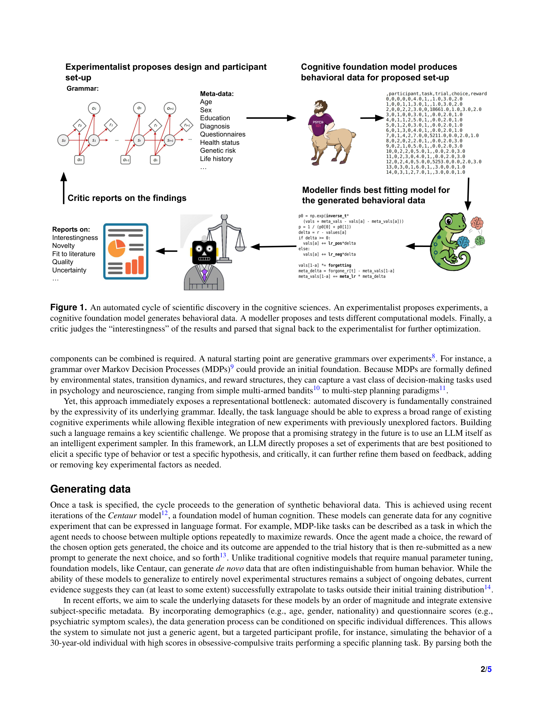

저자: Akshay K. Jagadish, Milena Rmus, Kristin Witte, Marvin Mathony, Marcel Binz, Eric Schulz | 날짜: 2026-03-22 | arXiv: 2603.20988 | 분야: cs.AI

Figure 1
인지과학의 발견 사이클(실험 설계 -> 데이터 수집 -> 모델 비교 -> 결론 도출)을 LLM 기반으로 완전 자동화하는 "in silico science of the mind" 비전을 제시하는 짧은 Perspective 논문이다. LLM이 실험 패러다임을 제안하고(Experimentalist), cognitive foundation model(Centaur)이 합성 행동 데이터를 생성하며, LLM 기반 program synthesis가 인지 모델을 대규모 탐색하고(Modeller), LLM-critic이 "interestingness"를 평가하여 루프를 닫는 4단계 자동 발견 엔진을 구상한다.
총평: 인지과학의 발견 사이클을 LLM과 cognitive foundation model로 완전 자동화하겠다는 대담한 비전을 제시한 짧은 Perspective 논문이다. 특히 Centaur를 in-loop data generator로 사용하고, LLM program synthesis로 인지 모델을 대규모 탐색한다는 아이디어는 인지과학과 AI의 교차점에서 참신하다. 그러나 5페이지 분량의 제약으로 각 구성 요소의 기술적 깊이가 부족하고, 통합 구현이 없으며, 실패 모드(특히 LLM에 의한 interestingness 평가의 순환성)가 핵심 위험으로 남아 있다. "In silico science of the mind"라는 방향성 자체는 AI4Science 커뮤니티에서 주목할 가치가 있다.